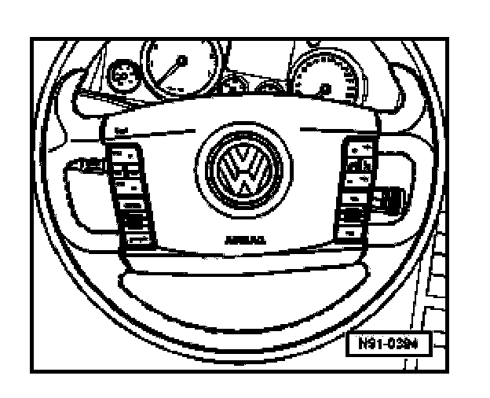

General Information
General Information

The multi-function steering wheel allows some functions of the Communication system to be operated from the steering wheel.
The control module for the multi-function steering wheel communicates only with the control module for steering column electronics where digital commands are prepared for system communications using the Convinience and Powertrain CAN Bus networks.
The multi-function steering wheel includes the following components:
- Operating unit with two sets of key pads and integrated electronics.
- A control module for the multi-function steering wheel.
Before troubleshooting or servicing, technicians must be familiar with the functions and operation specifics of the Multi-function steering wheel system.
CAUTION: When disconnecting and reconnecting battery terminals, observe all applicable Notes and torque specifications, as well as instructions on performing OBD program and electrical system function checks as specified.